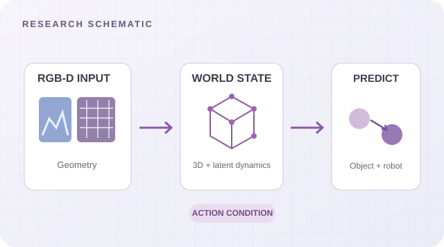
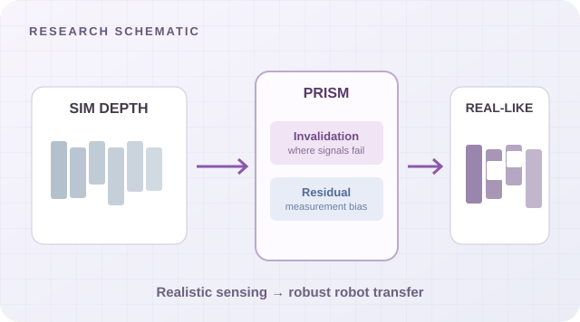
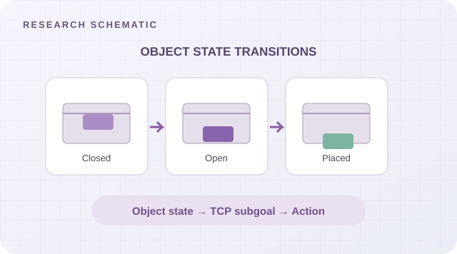
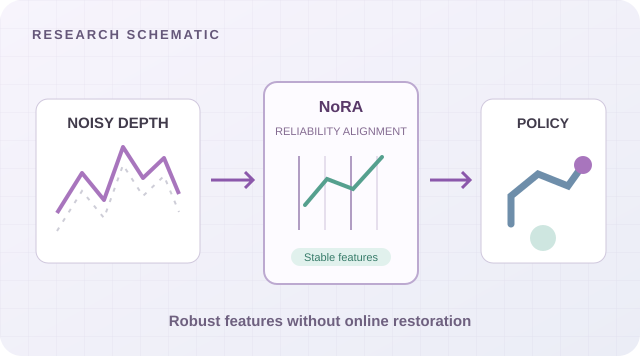

WORLD MODEL · ACTION-CONDITIONED DYNAMICS
DepState-JEPA
面向机器人操作的几何约束预测状态：融合 RGB-D 与公制三维坐标，学习共享世界状态，预测动作引起的视觉特征、机器人状态和物体运动，并用于规划。
EMBODIED AI · WORLD MODELS · ROBOT MANIPULATION
复旦大学 · 上海创智学院
计算机科学与技术直博生 / 上海
机器人操作 · 世界模型 · 具身学习
我是复旦大学计算机科学与技术直博生，在上海创智学院联合培养，研究方向是可靠机器人感知、几何约束世界模型与机器人操作学习。
我的研究连接真实机器人中的 Sim-to-Real 感知、多模态空间状态表征和动作条件动态预测，目标是帮助机器人理解环境变化，并作出更可靠的操作决策。
目前正在探索显式三维几何与可学习动态潜变量结合的 Geometry-Grounded World-Action Models，关注物理交互预测、动作评估与机器人学习。
从可靠真实感知，到动作条件世界状态预测与机器人操作。

面向机器人操作的几何约束预测状态：融合 RGB-D 与公制三维坐标，学习共享世界状态，预测动作引起的视觉特征、机器人状态和物体运动，并用于规划。

弥合仿真与真实机器人的感知差异：基于物理机制生成真实传感器噪声，让在仿真中训练的操作策略更稳健地迁移至真实环境。

将物体的历史与未来状态转移显式连接到机器人动作：通过对象状态图、TCP 子目标与连续动作的分阶段预测支持长时程操作。

通过可靠空间区域选择和稳定特征子空间学习，让机器人策略直接处理真实深度传感器观测，无需部署额外在线深度修复模型。
配图为为主页专门设计的概念示意图，不代表论文中的实验结果；论文及项目资料将在适宜公开时补充。
面向真实机器人操作的传感器鲁棒表征、空间状态感知与 Sim-to-Real 迁移。
PRISM · NoRA · BitDepth从 RGB-D 观测构建几何锚定的预测状态，研究动作条件的空间动态与物理交互。
DepState-JEPA · Current research利用物体状态、未来结果与真实交互反馈，支持机器人动作生成、规划与复杂操作。
OSTRA · Real-world systemsGeometry-Grounded World-Action Models：以显式三维几何作为空间锚点，以可学习动态潜变量刻画隐藏物理状态，探索动作条件预测与机器人策略协同学习。
2025.10 — 2026.09
面向密集货架的多 SKU 药品拣选，构建 RGB-D 困难样本、深度扰动增强及异常归因流程。评测覆盖 120 种药品 SKU 与 6 类困难工况。
2025.09 — 2026.02
从实物扫描、几何建模与关节参数化到仿真验证，构建抽屉、柜门、微波炉等可操作资产，适配 Isaac Sim、SAPIEN 与 MuJoCo。
2025.05 — 2025.08
围绕 Qwen2.5-VL 构建数据合成、教师蒸馏、验证筛选与分布式 SFT 流程，利用 STaR 自训练迭代增强谜题游戏视觉推理。
2024.07 — 2025.06
研究扩散与视觉自回归生成中的隐空间水印，以及动态屏幕内容的跨媒介抗截屏保护。
论文状态依据所提供简历整理；投稿与修订中的工作不表示已被接收。
联合培养 · 人工智能与具身智能 · 导师：卢策吾
直博 · 计算机科学与技术 · 导师：马兴军
本科 · 计算机科学与技术 · 导师：付章杰
01中国国际“互联网+”大学生创新创业大赛 · 国家级一等奖项目负责人
02国家奖学金 · 腾讯奖学金 · 小米奖学金
03教育部—华为智能基座未来之星 · 中国大学生自强之星
04复旦大学博士生学术论坛一等奖 · 卓越杯创新创业大赛一等奖均排序第一
05江苏省“挑战杯”黑科技专项赛 · 省级一等奖排序第一
LET’S CONNECT
欢迎交流机器人操作、世界模型，以及更广泛的具身智能与多模态学习。